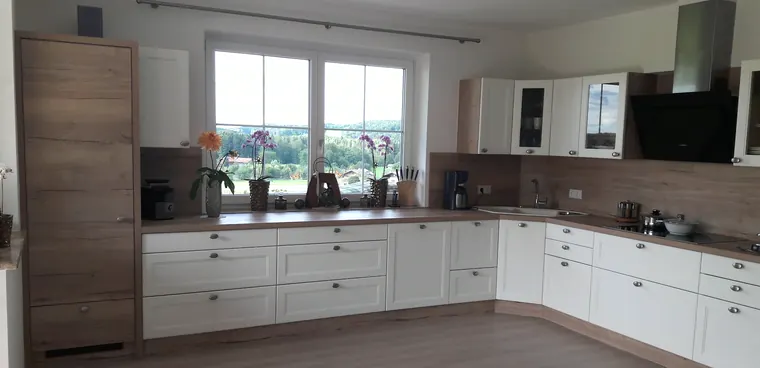

01Küchen
Planung bis MontageVon der Landhausküche bis zur grifflosen Kochinsel. Planung, Fronten, Arbeitsplatte, Geräteeinbau und Montage kommen aus einer Hand – und die Schauküche zum Angreifen steht bei uns im Haus.
- Planung & Aufmaß
- Kochinseln
- Arbeitsplatten-Tausch
- Geräteeinbau